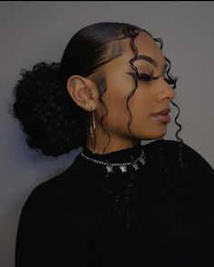
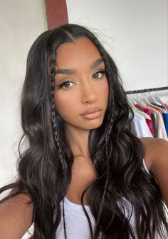
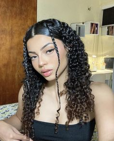
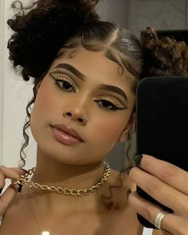
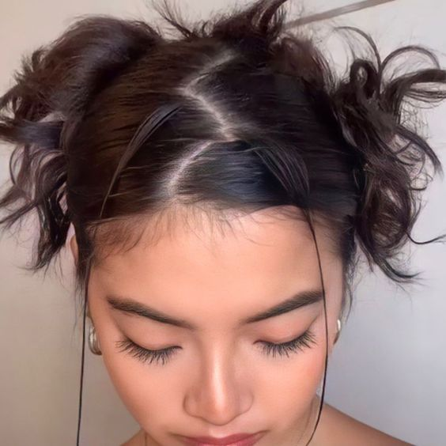

Coque baixo!
Coque baixo, para cabelos lisos e cacheados; penteado ideal para o dia-a-dia.
Indicado para aqueles dias em que nosso cabelo está o caos, podemos fazer um baby hair para tornar mais delicado.
Acompanhe o passo a passo com a Julia Castro aqui.

Penteado com trancinhas!
Esse penteado consiste em duas mechas da franja esticadas até a nuca, o restante do cabelo solto e, duas trancinhas superiores a franja.
Penteado ideal para um dia de compras, lanche com as amigas e/ou passeio.
Siga o passo a passo aqui.


Dois coques!
Na separação do cabelo podemos separá-lo reto ou em zig-zag.
Indicado para ir à escola.
Pronta para o tutorial? Para a separação reta, clique aqui.
Para a separação em zig-zag, clique aqui.

